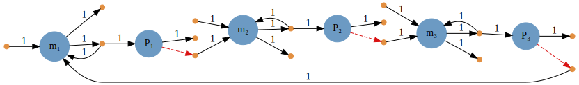

Using Catalyst
In this tutorial we provide an introduction to using Catalyst to specify chemical reaction networks, and then to solve ODE, jump, and SDE models generated from them. At the end we show what mathematical rate laws and transition rate functions (i.e. intensities or propensities) are generated by Catalyst for ODE, SDE and jump process models.
Let's start by using the Catalyst @reaction_network macro to specify a simple chemical reaction network: the well-known repressilator.
We first import the basic packages we'll need:
# If not already installed, first hit "]" within a Julia REPL. Then type:
# add Catalyst DifferentialEquations Plots Latexify
using Catalyst, DifferentialEquations, Plots, LatexifyWe now construct the reaction network. The basic types of arrows and predefined rate laws one can use are discussed in detail within the tutorial, The Reaction DSL. Here, we use a mix of first order, zero order, and repressive Hill function rate laws. Note, $\varnothing$ corresponds to the empty state, and is used for zeroth order production and first order degradation reactions:
repressilator = @reaction_network Repressilator begin
hillr(P₃,α,K,n), ∅ --> m₁
hillr(P₁,α,K,n), ∅ --> m₂
hillr(P₂,α,K,n), ∅ --> m₃
(δ,γ), m₁ <--> ∅
(δ,γ), m₂ <--> ∅
(δ,γ), m₃ <--> ∅
β, m₁ --> m₁ + P₁
β, m₂ --> m₂ + P₂
β, m₃ --> m₃ + P₃
μ, P₁ --> ∅
μ, P₂ --> ∅
μ, P₃ --> ∅
end α K n δ γ β μwhich gives
Model Repressilator with 15 equations
States (6):
m₁(t)
m₂(t)
m₃(t)
P₁(t)
P₂(t)
P₃(t)
Parameters (7):
α
K
n
δ
γ
β
μshowing that we've created a new network model named Repressilator with the listed chemical species and states. @reaction_network returns a ReactionSystem, which we saved in the repressilator variable. It can be converted to a variety of other mathematical models represented as ModelingToolkit.AbstractSystems, or analyzed in various ways using the Catalyst.jl API. For example, to see the chemical species, parameters, and reactions we can use
species(repressilator)which gives
6-element Array{Term{Real},1}:
m₁(t)
m₂(t)
m₃(t)
P₁(t)
P₂(t)
P₃(t)parameters(repressilator)which gives
7-element Array{Sym{ModelingToolkit.Parameter{Real}},1}:
α
K
n
δ
γ
β
μand
reactions(repressilator)which gives
15-element Vector{Reaction}:
Catalyst.hillr(P₃(t), α, K, n), ∅ --> m₁
Catalyst.hillr(P₁(t), α, K, n), ∅ --> m₂
Catalyst.hillr(P₂(t), α, K, n), ∅ --> m₃
δ, m₁ --> ∅
γ, ∅ --> m₁
δ, m₂ --> ∅
γ, ∅ --> m₂
δ, m₃ --> ∅
γ, ∅ --> m₃
β, m₁ --> m₁ + P₁
β, m₂ --> m₂ + P₂
β, m₃ --> m₃ + P₃
μ, P₁ --> ∅
μ, P₂ --> ∅
μ, P₃ --> ∅We can also use Latexify to see the corresponding reactions, which shows what the hillr terms correspond to mathematically
latexify(repressilator, starred=true)\[\begin{align*} \require{mhchem} \ce{ \varnothing &->[\frac{\alpha K^{n}}{K^{n} + P{_3}^{n}}] m{_1}}\\ \ce{ \varnothing &->[\frac{\alpha K^{n}}{K^{n} + P{_1}^{n}}] m{_2}}\\ \ce{ \varnothing &->[\frac{\alpha K^{n}}{K^{n} + P{_2}^{n}}] m{_3}}\\ \ce{ m{_1} &<=>[\delta][\gamma] \varnothing}\\ \ce{ m{_2} &<=>[\delta][\gamma] \varnothing}\\ \ce{ m{_3} &<=>[\delta][\gamma] \varnothing}\\ \ce{ m{_1} &->[\beta] m{_1} + P{_1}}\\ \ce{ m{_2} &->[\beta] m{_2} + P{_2}}\\ \ce{ m{_3} &->[\beta] m{_3} + P{_3}}\\ \ce{ P{_1} &->[\mu] \varnothing}\\ \ce{ P{_2} &->[\mu] \varnothing}\\ \ce{ P{_3} &->[\mu] \varnothing} \end{align*}\]
Assuming Graphviz is installed and commandline accessible, within a Jupyter notebook we can also graph the reaction network by
g = Graph(repressilator)giving

The network graph shows a variety of information, representing each species as a blue node, and each reaction as an orange dot. Black arrows from species to reactions indicate reactants, and are labelled with their input stoichiometry. Similarly, black arrows from reactions to species indicate products, and are labelled with their output stoichiometry. In contrast, red arrows from a species to reactions indicate the species is used within the reactions' rate expressions. For the repressilator, the reactions
hillr(P₃,α,K,n), ∅ --> m₁
hillr(P₁,α,K,n), ∅ --> m₂
hillr(P₂,α,K,n), ∅ --> m₃have rates that depend on the proteins, and hence lead to red arrows from each Pᵢ.
Note, from the REPL or scripts one can always use savegraph to save the graph (assuming Graphviz is installed).
Mass Action ODE Models
Let's now use our ReactionSystem to generate and solve a corresponding mass action ODE model. We first convert the system to a ModelingToolkit.ODESystem by
odesys = convert(ODESystem, repressilator)We can once again use Latexify to look at the corresponding ODE model
latexify(odesys)\[\begin{aligned} \frac{dm_1(t)}{dt} =& \frac{\alpha K^{n}}{K^{n} + \left( \mathrm{P_3}\left( t \right) \right)^{n}} - \delta \mathrm{m_1}\left( t \right) + \gamma \\ \frac{dm_2(t)}{dt} =& \frac{\alpha K^{n}}{K^{n} + \left( \mathrm{P_1}\left( t \right) \right)^{n}} - \delta \mathrm{m_2}\left( t \right) + \gamma \\ \frac{dm_3(t)}{dt} =& \frac{\alpha K^{n}}{K^{n} + \left( \mathrm{P_2}\left( t \right) \right)^{n}} - \delta \mathrm{m_3}\left( t \right) + \gamma \\ \frac{dP_1(t)}{dt} =& \beta \mathrm{m_1}\left( t \right) - \mu \mathrm{P_1}\left( t \right) \\ \frac{dP_2(t)}{dt} =& \beta \mathrm{m_2}\left( t \right) - \mu \mathrm{P_2}\left( t \right) \\ \frac{dP_3(t)}{dt} =& \beta \mathrm{m_3}\left( t \right) - \mu \mathrm{P_3}\left( t \right) \end{aligned}\]
(Note, there is currently a Latexify bug that causes different fonts to be used for the species symbols on each side of the equations.)
Before we can solve the ODEs, we need to specify the values of the parameters in the model, the initial condition, and the time interval to solve the model on. To do this we need to build mappings from the symbolic parameters and the species to the corresponding numerical values for parameters and initial conditions. We can build such mappings in several ways. One is to use Julia Symbols to specify the values like
pmap = (:α => .5, :K => 40, :n => 2, :δ => log(2)/120,
:γ => 5e-3, :β => log(2)/6, :μ => log(2)/60)
u₀map = [:m₁ => 0., :m₂ => 0., :m₃ => 0., :P₁ => 20., :P₂ => 0., :P₃ => 0.]Alternatively, we can use ModelingToolkit symbolic variables to specify these mappings like
@parameters α K n δ γ β μ
@variables t m₁(t) m₂(t) m₃(t) P₁(t) P₂(t) P₃(t)
pmap = (α => .5, K => 40, n => 2, δ => log(2)/120,
γ => 5e-3, β => 20*log(2)/120, μ => log(2)/60)
u₀map = [m₁ => 0., m₂ => 0., m₃ => 0., P₁ => 20., P₂ => 0., P₃ => 0.]
Knowing these mappings we can set up the ODEProblem we want to solve:
# time interval to solve on
tspan = (0., 10000.)
# create the ODEProblem we want to solve
oprob = ODEProblem(repressilator, u₀map, tspan, pmap)Note, by passing repressilator directly to the ODEProblem, Catalyst has to (internally) call convert(ODESystem, repressilator) again to generate the symbolic ODEs. We could instead pass odesys directly like
oprob2 = ODEProblem(odesys, u₀map, tspan, pmap)oprob and oprob2 are functionally equivalent, each representing the same underlying problem.
At this point we are all set to solve the ODEs. We can now use any ODE solver from within the DifferentialEquations.jl package. We'll use the recommended default explicit solver, Tsit5(), and then plot the solutions:
sol = solve(oprob, Tsit5(), saveat=10.)
plot(sol)
We see the well-known oscillatory behavior of the repressilator! For more on the choices of ODE solvers, see the DifferentialEquations.jl documentation.
Stochastic Simulation Algorithms (SSAs) for Stochastic Chemical Kinetics
Let's now look at a stochastic chemical kinetics model of the repressilator, modeling it with jump processes. Here, we will construct a JumpProcesses JumpProblem that uses Gillespie's Direct method, and then solve it to generate one realization of the jump process:
# redefine the initial condition to be integer valued
u₀map = [:m₁ => 0, :m₂ => 0, :m₃ => 0, :P₁ => 20, :P₂ => 0, :P₃ => 0]
# next we create a discrete problem to encode that our species are integer valued:
dprob = DiscreteProblem(repressilator, u₀map, tspan, pmap)
# now, we create a JumpProblem, and specify Gillespie's Direct Method as the solver:
jprob = JumpProblem(repressilator, dprob, Direct(), save_positions=(false,false))
# now, let's solve and plot the jump process:
sol = solve(jprob, SSAStepper(), saveat=10.)
plot(sol)
We see that oscillations remain, but become much noisier. Note, in constructing the JumpProblem we could have used any of the SSAs that are part of JumpProcesses instead of the Direct method, see the list of SSAs (i.e., constant rate jump aggregators) in the documentation.
Common questions that arise in using the JumpProcesses SSAs (i.e. Gillespie methods) are collated in the JumpProcesses FAQ.
Chemical Langevin Equation (CLE) Stochastic Differential Equation (SDE) Models
At an intermediate physical scale between macroscopic ODE models and microscopic stochastic chemical kinetics models lies the CLE, given by a system of SDEs that add to each ODE above a noise term. As the repressilator has species that get very close to zero in size, it is not a good candidate to model with the CLE (where solutions can then go negative and become unphysical). Let's create a simpler reaction network for a birth-death process that will stay non-negative:
bdp = @reaction_network begin
c₁, X --> 2X
c₂, X --> 0
c₃, 0 --> X
end c₁ c₂ c₃
p = (:c₁ => 1.0, :c₂ => 2.0, :c₃ => 50.)
u₀ = [:X => 5.]
tspan = (0.,4.)The corresponding Chemical Langevin Equation SDE is then
\[dX(t) = \left( c_1 X\left( t \right) - c_2 X\left( t \right) + c_3 \right) dt + \sqrt{c_1 X(t)} dW_1(t) - \sqrt{c_2 X(t)} dW_2(t) + \sqrt{c_3} dW_3(t)\]
where each $W_i(t)$ denotes an independent Brownian Motion. We can solve the CLE model by creating an SDEProblem and solving it similarly to what we did for ODEs above:
# SDEProblem for CLE
sprob = SDEProblem(bdp, u₀, tspan, p)
# solve and plot, tstops is used to specify enough points
# that the plot looks well-resolved
sol = solve(sprob, LambaEM(), tstops=range(0., step=4e-3, length=1001))
plot(sol)
We again have complete freedom to select any of the StochasticDiffEq.jl SDE solvers, see the documentation.
Reaction rate laws used in simulations
In generating mathematical models from a ReactionSystem, reaction rates are treated as microscopic rates. That is, for a general mass action reaction of the form $n_1 S_1 + n_2 S_2 + \dots n_M S_M \to \dots$ with stoichiometric substrate coefficients $\{n_i\}_{i=1}^M$ and rate constant $k$, the corresponding ODE and SDE rate laws are taken to be
\[k \prod_{i=1}^M \frac{(S_i)^{n_i}}{n_i!},\]
while the jump process transition rate (i.e., the propensity or intensity function) is
\[k \prod_{i=1}^M \frac{S_i (S_i-1) \dots (S_i-n_i+1)}{n_i!}.\]
For example, the rate law of the reaction $2X + 3Y \to Z$ with rate constant $k$ would be
\[k \frac{X^2}{2!} \frac{Y^3}{3!} \\\]
giving the ODE model
\[\begin{align*} \frac{dX}{dt} &= -2 k \frac{X^2}{2!} \frac{Y^3}{3!}, & \frac{dY}{dt} &= -3 k \frac{X^2}{2!} \frac{Y^3}{3!}, & \frac{dZ}{dt} &= k \frac{X^2}{2!} \frac{Y^3}{3!}. \end{align*}\]
This implicit rescaling of rate constants can be disabled through explicit conversion of a ReactionSystem to another system via Base.convert using the combinatoric_ratelaws=false keyword argument, i.e.
rn = @reaction_network ...
convert(ODESystem, rn; combinatoric_ratelaws=false)For the previous example using this keyword argument would give the rate law
\[k X^2 Y^3\]
and the ODE model
\[\begin{align*} \frac{dX}{dt} &= -2 k X^2 Y^3, & \frac{dY}{dt} &= -3 k X^2 Y^3, & \frac{dZ}{dt} &= k X^2 Y^3. \end{align*}\]
Notes
For each of the preceding models we converted the
ReactionSystemto, i.e., ODEs, jumps, or SDEs, we had two paths for conversion:a. Convert to the corresponding ModelingToolkit system and then use it in creating the corresponding problem.
b. Directly create the desired problem type from the
ReactionSystem.The latter is more convenient, however, the former will be more efficient if one needs to repeatedly create the associated
Problem.ModelingToolkit offers many options for optimizing the generated ODEs and SDEs, including options to build functions for evaluating Jacobians and/or multithreaded versions of derivative evaluation functions. See the options for
ODEProblems andSDEProblems.